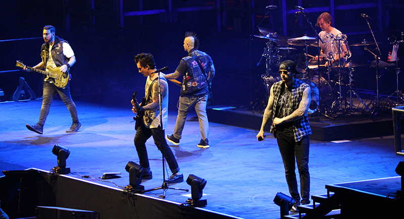

A simple fan website created by Varia Ana - Maria

Avenged Sevenfold (also known as A7X) is an American heavy metal band from Huntington Beach, California. The band was formed in 1999.
They started out as a metalcore band with their first two albums, but later changed their style to traditional heavy metal and hard rock on their album City of Evil in 2005. They are very popular for their catchy guitar riffs, guitar duels, and melodramatic songs.
| Fact | Details |
|---|---|
| Origin | Huntington Beach, California, USA |
| Years Active | 1999 - Present |
| Current Lineup | M. Shadows, Synyster Gates, Zacky Vengeance, Johnny Christ, Brooks Wackerman |
| Number of Albums | 8 Studio Albums |
| Famous Symbol | Deathbat (a skull with bat wings) |